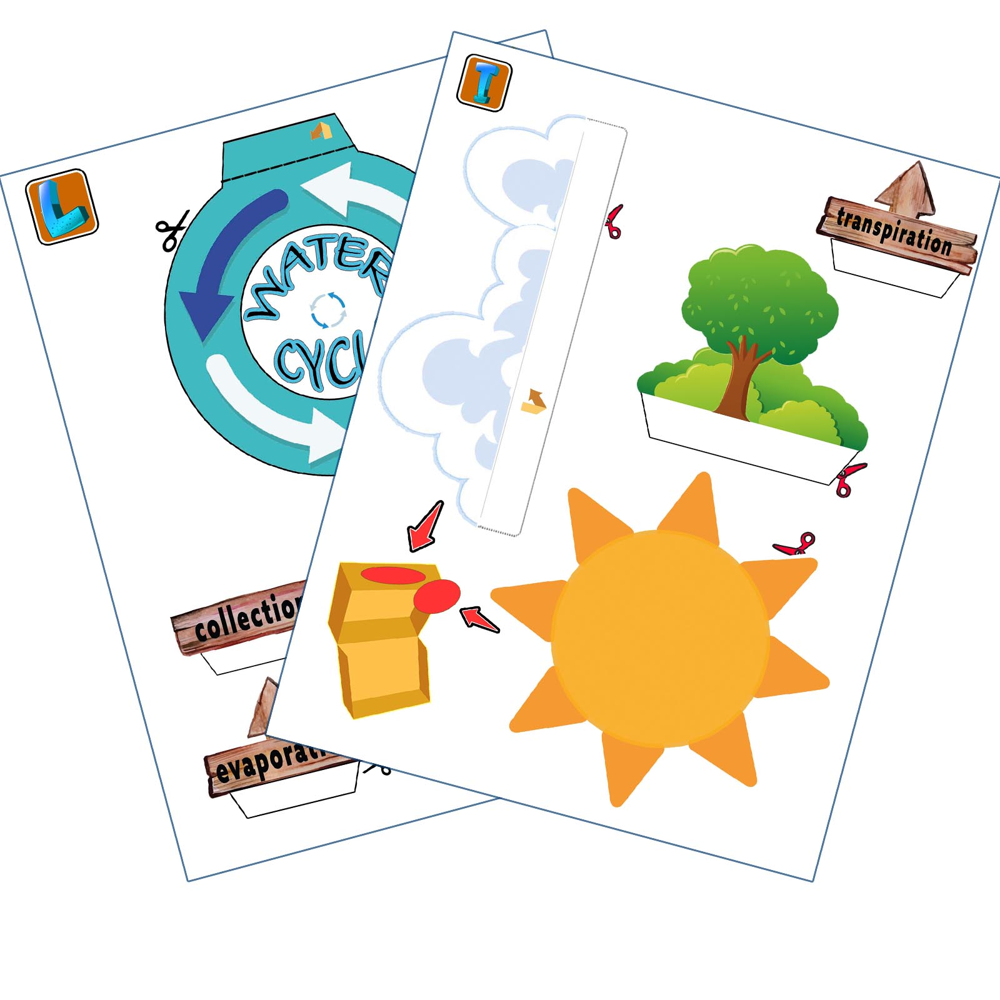
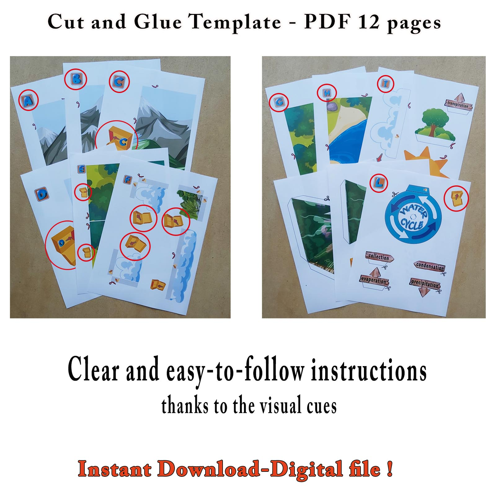
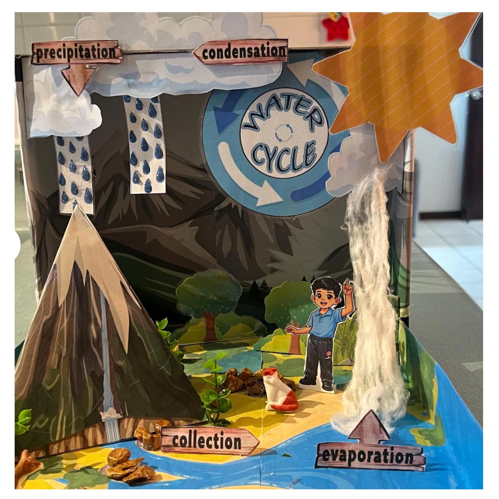

EVS Projects · 3D Models · Habitat Projects · School Activities
Water Cycle · Science · EVS · 3D Model
Water Cycle Project for Kids
Need a water cycle project for school? This printable 3D model turns the water cycle (जल चक्र) into a hands-on science project with evaporation, condensation, precipitation, collection and transpiration.
An Easy Water Cycle Project for Busy Parents
If your child suddenly needs a water cycle model, science project or EVS assignment for school, this printable project gives you an easy starting point. The scenery, clouds, water-cycle labels and 3D pieces are already illustrated, so children can focus on cutting, arranging, building and learning.
What Children Can Learn
Children can explore how water moves through evaporation, condensation, precipitation, collection and transpiration. The finished model makes the water cycle easier to see and explain, making it useful for science activities, EVS, school exhibitions and Class 3, Class 4 or Class 5 projects.
See What Is Included
The 12-page printable set includes mountain and landscape backgrounds, clouds, rain and snow, a sun, a water-cycle sign, process labels and other pieces for building a layered 3D water cycle model.
From Printable Pages to a 3D Water Cycle Model
Children can turn the printable pages into a layered model instead of making only a flat water cycle diagram. The labels help show the different stages while the landscape, clouds, sun and water add depth to the finished school project.

How to Make the Water Cycle Project
1
Print
Print the project pages at home on paper or slightly thicker paper.
2
Cut
Cut out the scenery, clouds, labels and other water cycle pieces.
3
Build
Arrange and glue the pieces inside a shoebox or similar cardboard box to create the 3D model.
See the Finished Water Cycle Model

See How Students Made It Their Own
The printable project gives children a ready-made starting point, but they can also add their own materials and ideas. These customer projects use extra plants, small objects and craft materials to turn the printable water cycle into a personal 3D school model.

Watch the Water Cycle Project
Want to Make This Water Cycle Project?
Get the printable Water Cycle Project as an instant digital download. Print the 12 pages, cut out the pieces and build your own 3D water cycle model for school.
Digital PDF · ₹299 · Secure checkout
Your Water Cycle Project is Ready
Payment verified. Use the button below to download your PDF.